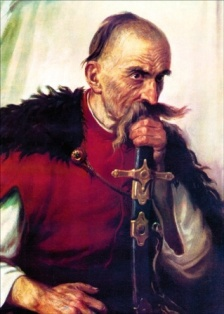
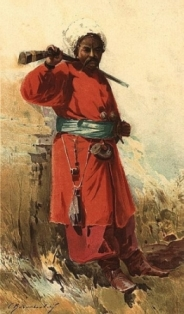
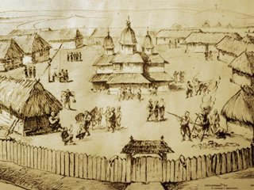
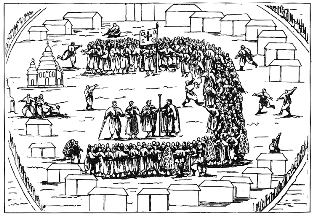
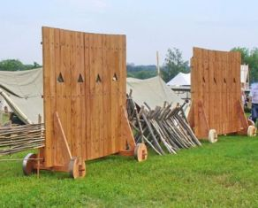
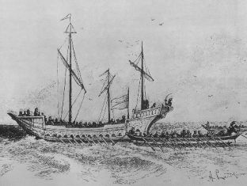

УКРАЇНСЬКЕ КОЗАЦТВО НАПР. XV - ПЕР. ПОЛ. XVII СТ.
1. Становлення українського козацтва.
Походження назви.Термін «козак» уперше згадується в Початковій монгольській хроніці 1240, куди перейшовіз тюркських мов у значенні — «схильний до завоювання». УXIV ст. фігурує у дописі до збірника житій святих «Синаксар» (1308) та у словнику половецької мови «Кодекс Куманікус» (1303) у значенні «страж», «конвоїр». Первісне, слово «козак» вживалося на означення вільних людей, які населяли південноукраїнські степи.
Шляхи формування козацтва. Існувало декілька шляхів формування козацтва. Його попередником стало слов'янське населення басейнів нижньої течії рр. Дніпра, Південного Бугу і Дністра (літописні «бродники»), яке займалося господарською діяльністю у цих регіонах і мало демократичну військову організацію. З посиленням національного і соціального гноблення іноземних феодалів значна частина українських селян та міщан втікала в малозаселені прикордонні райони й поповнювала ряди козаків. За дніпровські пороги спрямовувалася хвиля уходників — сезонних здобичників, окремі з яких оселялися у степу з метою його господарського освоєння. В ряди козацтва вступала і українська шляхта, що втратила свої маєтності. На процес формування козацтва значний вплив мав зовнішній фактор. З часу утворення Кримського ханства систематично відбувались набіги на українські землі. Перша писемна згадка про українських козаків міститься у хроніці М. Бєльського від 1489 р.
 Поява Запорізької Січі. Для захисту від татарсько-турецької агресії у Пониззі Дніпра на південь від дніпровських порогів була створена військово-політична організація Запорізька Січ. Перше укріплення бл. 1555-1556 рр. збудував на дніпровському острові Мала Хортиця Д. Вишневецький. Згодом ЗапорізькаСіч стала державно-політичним утворенням з демократичним устроєм. Основними рисами запорозького козацтва були: родинний принцип організації братства (побратимства, рівність, демократизм), морально-етичний кодекс поведінки (високий соціальний статус свободи, мужності, відданості товариству і, навпаки, низький статус мирної праці, спокійного способу життя тощо), інститут кобзарів, спеціальна наука молоді, специфічне ставлення до жінки, аскетизм, релігійність, колективне землеволодіння.
Городове і волосне козацтво. Польсько-литовська державна адміністрація залучала козаків до оборони кордонів Речі Посполитої. Впродовж XVI ст. сформувалася окрема категорія козацтва — городове козацтво. Його організаторами були прикордонні старости.
Реєстрові козаки. Удругій пол. XVI ст. польський уряд намагався послабити вплив запорожців і встановитинад ними контроль. Король Сигізмунд II Август грамотою від 5 червня 1572 започаткував практику внесення козаків у спеціальний список, що визначав козацький статус — реєстр. Козаки вписані у реєстр отримали назву реєстрових козаків. У 1578 кількість реєстрового козацтва зросла до 500. Королівський універсал від 25 липня 1590 збільшував реєстр до 1 тис. козаків. Військова влада над реєстровцями належала гетьману, якого обирали за згодою уряду. Організаційно реєстрове козацтво складалося з 6 полків (1625) — Білоцерківського, Канівського, Черкаського, Корсунського, Переяславського,Чигиринського, що поділялися на сотні.
 Козацька старшина. Поступово в середовищі козаків сформувався окремий суспільний прошарок — козацька старшина. Спочатку до її складу входили отамани ватаги, що були керівниками перших козацьких загонів. Повного організаційного оформлення козацька старшина набула в період створення Запорізької Січі. В різні часи її існування чисельність цієї групи козацтва була неоднаковою і деколи сягала до 150 осіб. До складу козацької старшини входили: військова старшина — кошовий отаман, військовий суддя, військовий осавул, військовий писар та курінні отамани; військові служителі - підписар, булавничий, хорунжий, бунчужний, перначний, підосавул, довбиш, піддовбиш, військовий пушкар, підпушкар, гармаш, військовий товмач, військовий шафарі, підшафар, кантаржій та канцеляристи; похідні та паланкові начальники - полковник, писар, осавул, підписар та підосавул. Вперіод ведення воєнних дій обирався також обозний, що був помічником осавула і входив до складу військової старшини. Старшину обирали на військовій козацькій раді за участю всього козацтва. Козацька старшина існувала у реєстровому козацькому війську, що було створене у 1572. На чолі реєстрових козаків стояв гетьман, якого обирали за погодженням з королівським урядом на загальній військовій раді. До реєстрової старшини належали: 2, а згодом 4 осавули,обозний, військовий суддя, військовий писар, полковники та сотники.
Особливість козацького стану полягала у тому, що він остаточно оформився під тиском зовнішної агресії зі сторони Османської імперії та Кримського ханства, а отже війна посідала одне з ключових місць у житті козаків. Поступово з розвитком козацького стану сформувалось і військове мистецтво козаків. Особливо важливе значення у їхньому війську відігравала піхота - основний рід козацького війська, яка на відміну від тогочасних європейських армій переважно діяла самостійно, тобто без підтримки інших родів війська. Класична тактика козацької піхоти полягала у шикуванні під час бою в три шеренги. Стріляла тільки перша лава, друга подавала, а третя заряджала зброю. Проте практикували і інші варіанти, наприклад галас, це коли козацьке військо змішувалось з ворожим. Найоригінальнішим і найпопулярнішим серед козаків був бойовий порядок, що називався табором. Табір застосовувався козацьким військом на марші, в обороні та наступі. Він будувався з возів, скріплених ланцюгами у кілька рядів та вилаштуваних чотирикутником, півмісяцем або ж овалом. Мобільність такого війська була досить високою, про що і свідчить назва такого табору - "рухома фортеця", оскільки в такому таборі козаки могли долати сотні кілометрів і витримувати облогу по кілька місяців.
Козацька розвідка. Перманентна загроза військової агресії змушувала козаків дбати про безпеку своїх володніь та війська, це зумовлювало потребу превентивних заходів по виявленню ворогів та їх знешкодження, отримання інформації про можливість нападу і т. д. Саме ці функції виконувала сторожова служба і дозір. Козацькі розвідувально-сторожові загони дислокувались в земляних або дерев'яних укріпленнях на кордонах українських земель. Використовували також кургани, або насипали свої. З утворенням Гетьманщини за Богдана Хмельницького поступово оформлюється своєрідна контррозвідувальна служба, яка в своїй діяльності не обмежувалась українськими територіями, але діяла і на території інших держав з метою забезпечення інтересів Гетьманщини.
Козацька зброя. Козаки були хорошими артелеристами, вони віддавали перевагу переважно легким гарматам, які дозволяє зберігати маневреність війська. Для штурму дуже часто використовували гуляй-городи - спеціальні пристрої з дерев'яних щитів на колесах або полозах з отворами (амбразурами) для рушниць і гармат. Із-поміж зброї особливою шаною в козаків користувалися рушниця, спис і шабля. Венеціанський посол Альберто Віміна, який побував в Україні 1650 р., записав: "Мені доводилося бачити, як козаки кулею гасили свічку, відсікаючи нагар так, наче це зроблено за допомогою щипців".
 Козацький флот. Військова майстерність козаків не обмежувалась одним лише суходолом. На січі взагалі вважалось, що справжній козак - лише той, хто випробував себе в морському бою. Козацький флот складався з легких, надзвичайно маневрених човнів - чайок. Чайки рухалися за допомогою або весел, або вітрил, що давало змогу якнайкраще використовувавти погодні умови. Перевагою чайок було й те, що вони могли пришвартуватися до будь-якого берега, на вілміну від громіздких і неповоротких турецьких галер.